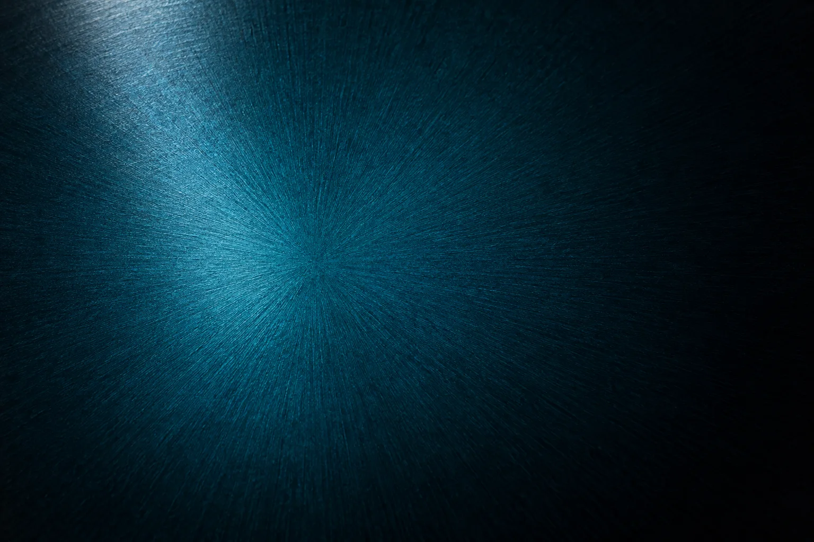
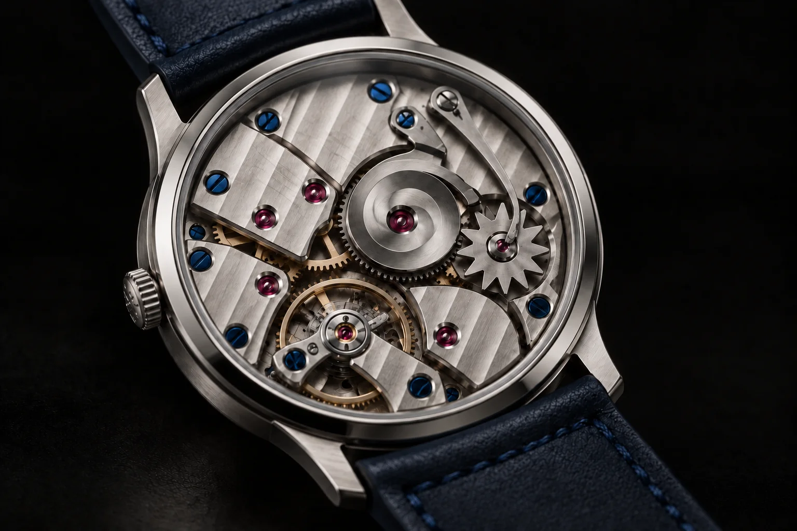
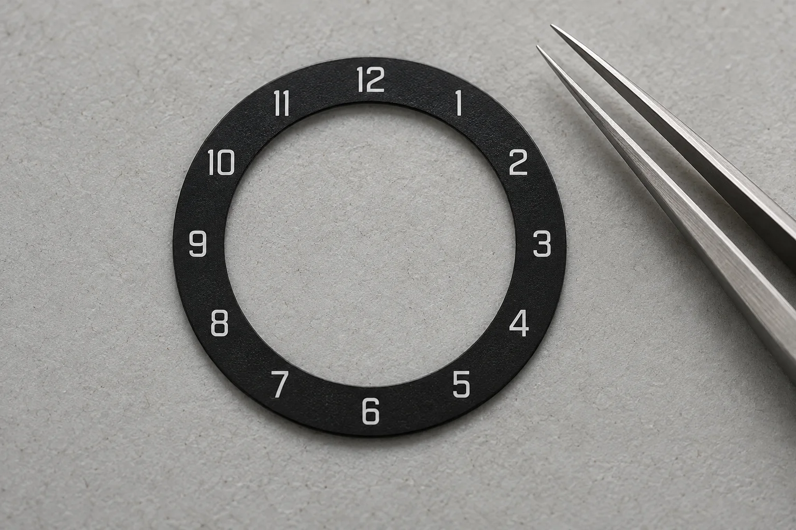
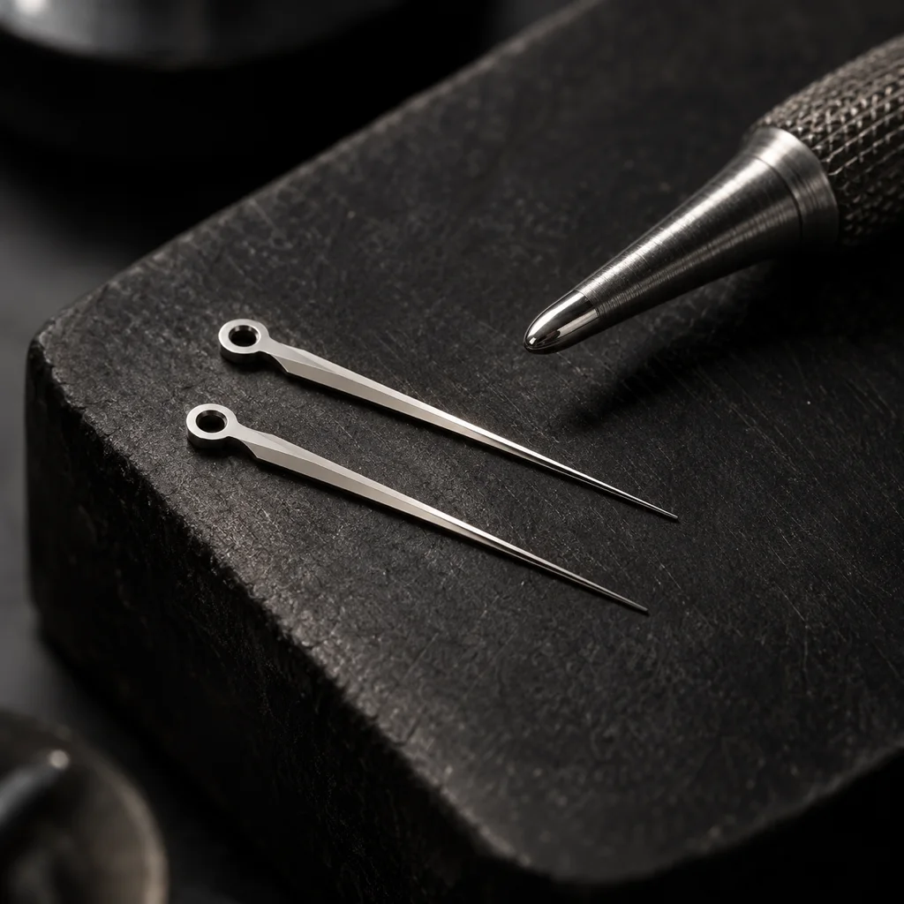
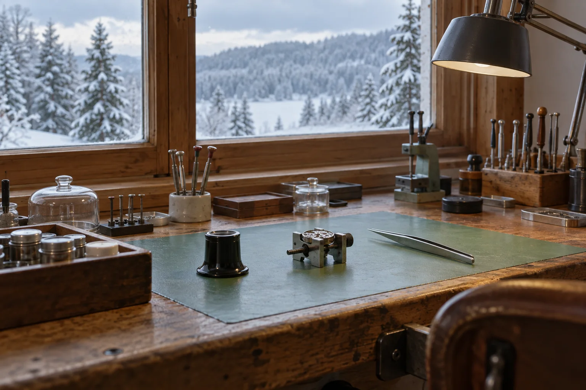

Petrol at the centre, night at the edge.
Lacquer: fourteen coats sprayed over a sunburst-brushed blank, each one sanded back by hand. Eleven days a dial, and one in four is refused.
Le Brassus
menunext jump on the hour
The hour arrives all at once.
Request an allocation
There is no hour hand. A snail cam on the minute wheel turns once an hour, and as it turns it lifts a lever and loads a spring. At the top of the hour the lever falls off the snail’s step, the spring drives a finger into the star wheel, and the hour disc turns one numeral in 0.03 seconds. A jumper holds the star still until the next hour. The minute hand never notices.
The spring is loading.
Drawn from the caseback side, so every wheel turns the other way. Press J anywhere on the page to play the jump.

Lacquer: fourteen coats sprayed over a sunburst-brushed blank, each one sanded back by hand. Eleven days a dial, and one in four is refused.

Hour disc: German silver, 0.25 mm thick, lacquered black and printed in a single pass, so no hour sits heavier than another.

Hand: cut from steel, bevelled at 30 degrees and polished on tin with diamond paste. Two hours a hand, and the light face must meet the dark face in one clean line.
Each piece carries its number on the caseback and on the reverse of the hour disc. A request is a conversation with the atelier, not a reservation: we ask where you live and how you will wear it.
To ask for an open piece, write to the atelier with the number you would like. Every letter is answered within a week, by the watchmaker who will finish it. Write to the atelier

Visits on Tuesday and Thursday afternoons, by appointment, two guests at a time. Come before the hour and you will see one arrive.
From Le Brassus station, cross the line and follow the Orbe upstream past the sawmill. Where the road bends left, take the gravel path into the spruce; the atelier is the long timber building with the north windows. Eighteen minutes in snow.
Book a visitLe Brassus